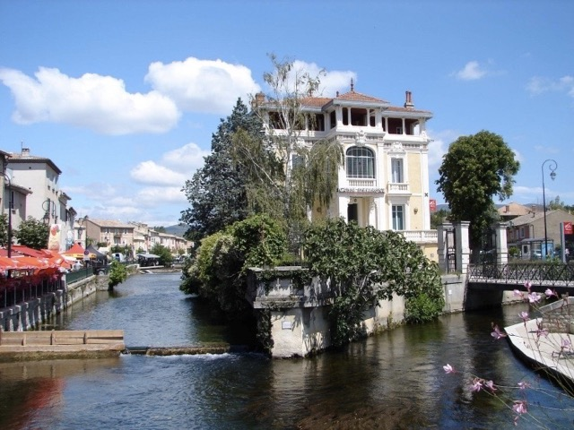
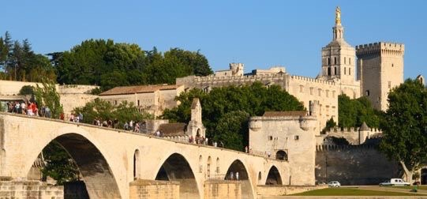

Discover the provence and all it's cosy little villages
Gordes
At the top of the village, the church and the castle face the hills of Luberon. Thanks to its privileged situation, its exceptional charm and its typical architecture, Gordes is classified as "one of the most beautiful villages of France".
Visit the Gordes website >
L'isle sur la sorgue
L’Isle sur la Sorgue is known as the Venice of Provence, as several canals and branches of the Sorgue from the Fontaine de Vaucluse a few miles upstream cross the town. The major activities of this town are tourism, agriculture and antique shops.
Fontaine de Vaucluse
The village of the Fontaine de Vaucluse is one of the most visited of Provence. The exceptional site ‘Vallis Clausa’ was named after the mysterious spring of the Sorgue.
Visit the website of the 'Sorgue region' >
Roussillon
Roussillon owes its repute to his magnificent cliffs and to its impressive open-air ochre quarries. Its red, yellow and brown colours contrast with the rich green pine forests and the blue sky of Provence.

Conquer the Mont Ventoux with your bike or enjoy the beautiful provence landscapes
The region is know as a bicyclist delight because of the the famous 'Tour de France'. Enjoy the provence nature or challenge the infamous Mont Ventoux, wich translate freely as 'Wind is always blowing Mountain'...

Visit the historic city Avignon
(1h. - 66km)
Behind the superbly preserved ramparts, you will discover the city of the Popes after passing one of the seven main doors.
The Palace of the Popes built in the fourteenth century and its lively square, célèsbre the Pont d'Avignon, the museums and palaces of the Petit Palais du Roure.
The ancient streets with restored facades will charm you.
Visit the Avignon website